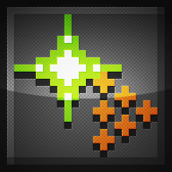

Script News & Announcements
November 1, 2018Massive Update - GMLscripts.com 3.5
I've just uploaded a massive update to the inner workings of the site. With any luck, you will not notice any major changes (ie. broken stuff). Hopefully the site is easier to read, a little nicer looking, and it should load a bit quicker.
The HTML, CSS, and JavaScript have been completely overhauled and streamlined. Heavy dependencies have been eliminated and minor ones have been consolidated. Server software has been updated across the board.
In all, since the last update, Git tells me:134 files changed, 5364 insertions(+), 1761 deletions(-)
This has been a big job and it is good to be finishing it. It also means that a new big job is ahead of me: updating all scripts on the site to GameMaker Studio 2 standards.
Onward and upward!
July 26, 2018Not-so-minor SSL Update
Earlier in the month I posted about minor updates coming to the site. A recent one was pretty major. I've transitioned the site to SSL and hopefully I didn't screw things up too badly. That means the site and forums should be accessed using https:// protocol. This secures your connection from being snooped by baddies and makes Chrome (and future browsers) less likely to alarm visitors with dire warnings of mischief.
The transition required a lot of gentle massaging to get everything working correctly. If something seems amiss, please let me know here or via Twitter.
July 1, 2018Minor and Future Updates
The site is currently undergoing some minor updates. You may have noticed larger text and larger header navigation links and a lack of my first love, Verdana. She had a good run but isn't ideal for larger, higher resolution displays. Other changes are nigh invisible and more are coming to modernize the site. A much larger overhaul is on the horizon.
A more significant update is the addition of a "copy" button next to scripts. This new feature should copy the entire script into the text clipboard without any tedious mousing around. This is something I've wanted since the start but back in those days it was only possible using a Flash widget or was rarely supported in JavaScript by a few browsers. Eventually, as the web became more standardized, JavaScript methods were removed due to security concerns. That left Flash as the only option which was more than I was willing to accept. In the last couple of years, I've learned, JavaScript clipboard functionality has started to creep back into most browsers, so I finally put the feature in. It's a little bit wonky behind the scenes but it works.
Finally, scripts are going to start supporting GameMaker Studio 2 better. This means JSDoc headers broadly but there are a few scripts that aren't compatible with GMS2 because of changes in function names or changes in the engine. I still need to work out how to deal with those while keeping GMS1 compatible scripts available. GameMaker: Studio 1.x has been sunsetted but a lot of people still use it. I have already explored options, going back to the introduction of GM:Studio, but none of them are all that appealing.
March 29, 2017Happy Birthday
It's hard to believe but GMLscripts.com turned 10 years old this month. Ten years, coincidentally, is also how long it has been since the last update — hur-hur.
In ten years the site has gone through many changes. Starting from a handful of scripts, the site has blossomed to host nearly 300. It is impossible to know their reach but it is safe to say scripts from the site have made their way into hundreds of projects and dozens of commercial games. This is incredibly flattering and gratifying. Little makes me happier than helping fellow developers. I'm proud that I can continue to do this day-to-day, through this site and personal interactions within the GameMaker community. But I do not do this alone. Many other GameMaker users have contributed to the site over the years and they have my deepest respect and eternal thanks.
What does the future have in store for the site? This month also marks the official release of GameMaker Studio 2. This is a new product with many important changes to what we are used to. No small part of that is the way GML works. Many built-in functions have changed or been made obsolete and many scripts which relied upon them will have to be updated. In fact, every script will have to be updated because GMS2 requires JSDoc comment blocks to support syntax highlighting in its IDE. Because GM:Studio 1.4 is still very widely used and will continue to be supported by YoYo Games, the site will continue to support it as well. That means maintaining two sets of scripts for the foreseeable future and providing new ways to navigate them. That's not an ideal choice but there is no other. Expect these changes within the next ten years.
Thank you for visiting GMLscripts.com. I hope it continues to be useful for a long time to come.
Read More News